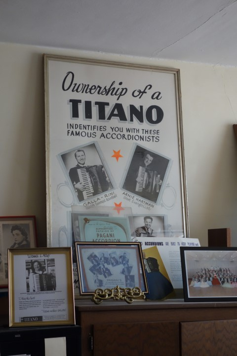
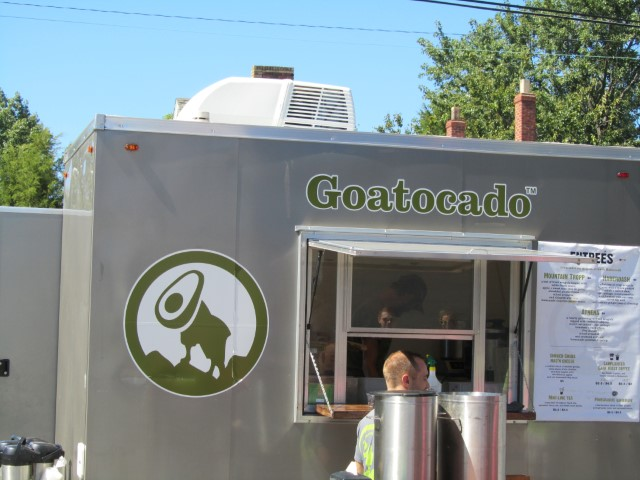

The last part of our pattern is the word evaluated. In this book, we'll use the word similarly to how we use it in day-to-day conversation.
This word "evaluated" adds a person to our pattern: someone has to do the evaluating.
Consider:
Does a book of jokes sitting on a shelf have any humor in it? Not according to our pattern of humor—since no one is currently evaluating the jokes. There can only be humor if someone is evaluating the jokes.
The word evaluation is like a hinge, where mistakes can swivel to OK or to not-OK. This lets our pattern describe when humor does and doesn’t occur. We can see this in some examples:
Timothy calls Jennifer.“Jennifer, I know Sam said otherwise, but I checked with the insurance company. They said the treatment is still experimental. They won’t cover it.”(←mistake)
Jennifer is silent for a second. Then she laughs, exhausted.(←mistake is evaluated as OK)“That’s what I thought. If we hold a fundraiser, I think we should still be able to cover it.”
- OR -
Jennifer is silent for a second. Then she starts to cry.(←the mistake is evaluated as not OK)“Oh my god. What are we going to do?”
Elias sees Jessica come in carrying a big box.“Jess, be careful, don’t knock the table…”The table is bumped, and a clay statue falls over. One of the arms shatters.(←mistake)
Elias rushes over and examines the broken statue.“You know… I think I like it this way!”(←the mistake is evaluated as OK)He laughs.
- OR -
Elias rushes over and examines the broken statue.“You know… I was so proud of finding this thing and now you ruined it.”(←the mistake is evaluated as not OK)
Sam walks into the bedroom, tying his tie.“Jen, the kids were eaten by wolves.”(←mistake)
Jennifer smiles while getting dressed.“Har har, I wish.”She laughs.(←mistake is evaluated as OK)
- OR -
Jennifer’s face turns pale.“WOLVES?!”(←mistake is evaluated as not-OK)
She stares at Sam, flabbergasted.(←mistake is still not OK)
Something clicks, and she covers her mouth and laughs. Sam laughs too.(←mistake is evaluated as OK)
Xiaowei is dropping his friend Lina off at their high school for the opening day of her play. “Break a leg!” Xiaowei says.“Also: You look nervous as hell!”Lina gives him the finger on the way out.(←Lina evaluates mistake as not OK)
Xiaowei laughs and gives a finger back as the door slams. Teasing followed by the bird was practically their secret handshake.(←Xiaowei evaluates mistake as OK)
- OR -
Xiaowei shakes his head as the door slams.“Hmph. Asshole.”(←Xiaowei evaluates mistake as not OK)
Damien checks his pocket. “Where’s my wallet? Shit. Maybe I left it at the bus stop!”(←mistake) He gets off at the nearest stop and runs back, panicking.
The wallet is still on the bench.“Phew! It IS here! Jesus Christ, how careless could I be?”(←mistake is evaluated as OK)Damien picks it up and laughs.
- OR -
The wallet is still on the bench.“It IS here! Jesus Christ, how could I be so fucking careless!”(←mistake is evaluated as not OK)Damien kicks a trash can in anger.
Two people are mountain biking when one flips on a root and tumbles down a small hill.(←mistake)“Oh my god! Justin! Are you okay?”Heather calls, jumping off her bike and scrambling down to the body and bike below.
Justin stirs and sits up.“Oof,”he says, adjusting his helmet shakily.“I’m fine!”(←mistake is evaluated as OK)They look at each other and start giggling with relief.
- OR -
Justin stirs and tries worriedly to sit up. His legs are tangled in the frame of the bike.“I hope I didn’t break something,”he says. Heather tugs on her helmet with worry.“Oh gosh oh gosh.”(←mistake is evaluated as not OK)
Sara sits down disconsolately.“I can’t believe she’d cheat on me.”(←mistake)
Something clicks in her perspective.“Well. Maybe I’d cheat on me too.”(←mistake is OK)She hiccup-laughs sadly.
- OR -
She puts her hand on her head.“Oh my God.”(←mistake is evaluated as not OK)A black despair creeps over her.
These examples help us see how an evaluation is something that someone does that pivots them toward humor or not-humor.
Consider:
Humor doesn't only happen—humor also doesn't happen. We’ll be learning as much about the humor that doesn’t happen as we do about the humor that does.
That's because in order to understand why we sometimes laugh at jokes, hugs, failure, and so on—we also have to understand why we sometimes don’t laugh at them.
By the end of this book, we’ll be as comfortable explaining the presence of laughter as we are explaining the absence of laughter.
Mistake:
If we expect to see a word other than "striding," then
"no striding"
deviates from our expectations—it's a mistake.
No mistake:
If we don't know idiomatic English, we won't see this as unusual—it's not a mistake.
OK:
If we understand the sign and feel secure from negative personal consequences—it's OK.
Not OK:
If we commissioned this sign and then realized it's not idiomatic, we feel risk of negative personal consequences (to our career, our patrons' opinions, our standards, or so on)—it's not OK.

Mistake:
If we don't expect owning a brand of accordion to be aspirational, a sincere poster about this my deviate from our expectations—it's a mistake.
No mistake:
If we grew up in a musical family in the 1960s and we've had this poster forever, it may be completely expected—it's not a mistake.
OK:
If the poster is in a museum, we'll feel secure from personal negative consequences—it's OK.
Not OK:
If the poster reminds us of something embarrassing, we may feel insecure from personal negative consequences—it's not OK.
Mistake:
If we expect to see the opposite phrasing
("no children unless accompanied by adults"),
this sign will deviate from what we expect—it's a mistake.
No mistake:
If we take our kid here every day, we come to expect the sign—it's not a mistake.
OK:
If this sign and law makes us feel more comfortable letting our kids play here, seeing this sign may make us feel secure from negative personal consequences—it's OK.
Not OK:
If we used to hang out and smoke with our friends on this playground, we may realize this new sign was about us and we feel embarrassed or in possible legal trouble—it's not OK.
Mistake:
If we've never seen an official sign making parking exceptions for Filipino consulate vehicles, this sign deviates from our expectations—it's a mistake.
No mistake:
If we live in a big city with lots of consulates, these unique signs may feel completely normal to us—it's not a mistake.
OK:
If we're walking, this sign has no effect on us and so we'll feel secure from negative consequences—it's OK.
Not OK:
If we're driving and trying to find a parking spot, the lack of parking may make us feel a risk of negative personal consequences—it's not OK.
Mistake:
If we don't expect the quality of the drawing or its contents in a public sketchbook, we'll see this as a deviation from the expected—a mistake.
No mistake:
If we don't see the sketchbook, we'll never have anything deviate from our expectations—it's not a mistake.
OK:
If we appreciate the drawing as we're shopping for art supplies, we won't feel any risk of negative consequences—it's OK.
Not OK:
If we work at the store, we may worry about whether the drawing is too weird. We'd feel risk of negative personal consequences—it's not OK.

Mistake:
If we don't expect "goat" and "advocado" to be combined (in words or pictures), this branding deviates from our expectations—it's a mistake.
No mistake:
If we eat here everyday, it's part of our expectations—it's not a mistake.
OK:
If the name of this food cart doesn't bother us, we'll feel secure from negative personal consequences—it's OK.
Not OK.
If our ex works here, we may feel risk of negative personal consequences—it's not OK.
Mistake:
If we expect the horse to say "neigh," then saying "doctorate denied" deviates from our expectations—it's a mistake.
No mistake:
If we've watched this clip dozens and dozens of times, saying "doctorate denied" is exactly in-line with our expectations—it's not a mistake.
OK:
If we know it's a show, we know we're secure from negative personal consequences—it's OK.
Not OK:
If we made this clip, we may feel that that there's a lot riding on it and so feel at risk of negative personal consequences—it's not OK.
That's it for this chapter! We'll talk about humor as an emotion next.
We introduced our model definition of humor. This model uses two input parameters: a mistake and an OK. We also described these inputs as coming from a person—they're evaluations.
A mistake is something that deviates from our expectations. A mistake isn't "good" or "bad"—it's just about how something relates to our expectations.
Our OK is how secure we feel from personal negative consequences. An OK doesn't meant we're "okay with" something bad happening. It's just how we're relating ourselves to negative consequences.
Evaluations create these mistakes and OK. This means someone is required for there to be humor. Without someone evaluating, there's no mistake or OK—and so can't be humor.